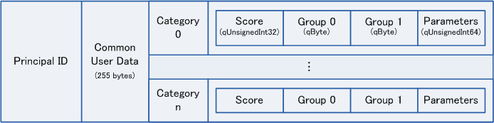
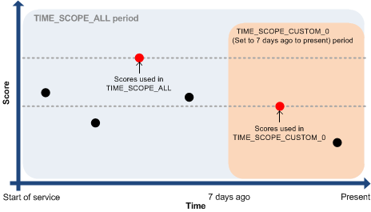

5. Ranking
5.1. Introduction
Ranking is a feature for generating rankings based on the scores registered by users. The scores registered by users are tallied by the server, and afterward, users can get their ranking in the game.
A user can have, and register, many types of scores, and these scores can be handled individually to generate separate rankings, and to register data related to the scores. For example, IN a game where the user chooses to play as a particular character, when the game is cleared, the time it took and the number of coins collected are registered as scores. These two scores can be ranked separately, and they can be associated with the character played in the game.
A variety of different kinds of rankings can be obtained. Examples include the top ranking, nearby rankings, or the ranking only among friends. It is also possible to filter using data associated with scores when getting rankings.
There is also a feature to get cached rankings, which enables the calls to get rankings to be made much more frequently, and a feature to get score statistics.
5.2. Information Saved by the Ranking Feature
The ranking feature can be used to save not only scores, but also a number of different kinds of related data. Figure 5.1 shows the kinds of data sets that are stored on the game server for each principal ID.
- Common user data
- One set of optional binary data that can be registered for each user.
- Information such as the user name can be saved here.
- Score
- Score values.
- A different kind of score can be used for each category number. When rankings are retrieved, a ranking is generated for each separate category number.
- Group
- A value associated with a single score that is used as a criterion for filtering scores
- When rankings are obtained, you can get just those rankings that match a particular group value. For more information, see 5.6.4.1.
- Parameter
- An optional value associated with a single score.
- Use to save things like the character number used in the game, or score-associated data such as the ID of the replay data uploaded to the data store.

Figure 5.1. Information Saved on the Game Server
If more than one score is registered for the same category, only the highest score is saved.
Note:
By using a NEX Unique ID, you can use multiple datasets with a single principal ID. For more information, see Using NEX Unique IDs for Rankings.
5.3. Ranking Workflow
This is the basic workflow when you use the ranking features.
- Log in to the game server.
- Initialize a service client. For more information, see 5.4.
- Use the various kinds of ranking features.
- Finalize the service client, and log out from the game server.
5.4. Initializing and Finalizing a Service Client
Initializing and finalizing a service client for ranking (RankingClient) involves the same processes as matchmaking. For more information, see 4.3.
5.5. Uploading Scores
Use the RankingClient::UploadScore() function to register or modify scores.
Table 5.1 shows the values that can be set to the RankingScoreData object as score attribute information.
| Item Name | Description | Values Allowed | Initial Value | Function Used |
|---|---|---|---|---|
| Category | Specifies the category number of the category to which to upload the score. | 32-bit, non-negative, integer | 0 | SetCategory() |
| Score | Specifies the score. | 32-bit, non-negative, integer | 0 | SetScore() |
| Group 0 | Specifies a group value to use as a filtering condition. | An integer between 0 and 255. | 0 | SetGroup0() |
| Group 1 | Specifies a group value to use as a filtering condition. | An integer between 0 and 255. | 0 | SetGroup1() |
| Parameter | Specifies data to associate with each score. | 64-bit, non-negative, integer | 0 | SetParam() |
| Score order | Specifies the score order (ascending or descending). This order is applied to rankings when they are retrieved. | RankingConstants::
or
RankingConstants::
|
RankingConstants:: |
SetOrderBy() |
| Score update mode | If scores are repeatedly registered to the same category, this specifies whether to overwrite the score. | RankingConstants::
or
RankingConstants::
|
RankingConstants:: |
SetUpdateMode() |
Any 32-bit, non-negative, integer between 0 and 4,294,967,295 can be specified for the score, but it is also possible to set upper and lower limits so that invalid scores do not get registered. For more information, see Setting Score Upper and Lower Limits.
The parameter could be used to store the character number used in the game, or for some kind of score-associated data uploaded to the data store, like the ID of the replay data.
The behavior differs depending on what value has been set for the score order, as follows.
RankingConstants::ORDER_BY_DESC(descending order): Larger scores are ranked higher.RankingConstants::ORDER_BY_ASC(ascending order): Smaller scores are ranked higher.
Note:
Always specify the same sort order for scores in the same category. If different sort orders are specified for data registered to the same category, there will be problems with the sorting when rankings are retrieved.
To make changes when scores are already registered on the game server, delete all of the score data using the NEX Server Management System tool (NMAS).
The behavior differs depending on what value has been set for the score update mode, as follows.
RankingConstants::UPDATE_MODE_NORMAL: Records the score if it is better than the earlier score in that category.RankingConstants::UPDATE_MODE_DELETE_OLD: Deletes the earlier score in the category and records the latest score. The latest score is always used, regardless of whether it is better or worse.
This function can only be used to register scores associated with the principal ID of the local user.
By specifying a NEX unique ID as an argument of the RankingClient::UploadScore() function, you can register scores at a more granular level than the principal ID. For more information, see 10.3.1.1.
5.6. Getting Rankings
Use the RankingClient::GetRanking() function to get rankings.
You can choose to get a variety of different kinds of rankings, including top rankings, nearby rankings, or friend rankings. You can also specify how to calculate rankings and filtering criteria.
Rankings are generated for each separate category.
5.6.1. Ranking Types
Select which kind of ranking to get by specifying a RankingMode for the parameter of the RankingClient::GetRanking() function. Table 5.2 shows which kinds of rankings can be retrieved.
| Type (Mode) | RankingMode Value | Description |
|---|---|---|
| Range ranking | RANKING_ |
Gets rankings in the range of the specified starting position and length. |
| Nearby rankings | RANKING_ |
Gets rankings near the specified user. |
| Friend rankings | RANKING_ |
Gets the rankings of friends of the local host. If a player does not have any friends, this gets only that player's data. |
| Rankings near friends | RANKING_ |
Gets rankings of friends that are near to the rankings of the local host. |
| Individual ranking data | RANKING_ |
Gets the ranking data for the specified user. |
Rankings are retrieved by specifying a starting position and length within the range of ranks that run from first to nth position, where n = RankingConstants::MAX_RANGE_RANKING_ORDER. The value specified for the starting position cannot be greater than (RankingConstants::MAX_RANGE_RANKING_ORDER – 1).
To get the top rankings, you can use the function that gets the cached top rankings, instead of a range of rankings. For more information, see 5.6.6.
When neighboring rankings are retrieved, the ranking of the specified user sits in the middle of the list. Of course, if the specified user ranks near the top or the bottom, this might not be the case. In those cases, you cannot get the specified number of rankings, regardless of the actual number of scores that have been registered.
Neighboring rankings differ from bounded rankings in that there is no restriction on which ranks can be obtained, and rankings can be obtained even if the rank of the specified user is lower than RankingConstants::MAX_RANGE_RANKING_ORDER.
5.6.2. Parameters for Calculating Ranking Order
Use the parameters of the RankingOrderParam class to specify how to calculate the rankings and which filter criteria to use. To do this, you must pass the parameters listed in Table 5.3 to the RankingOrderParam object.
| Item Name | Overview | Initial Value | Function Used |
|---|---|---|---|
| Order calculation method | Specifies how to calculate rankings when there are duplicate scores. | RankingConstants:: |
SetOrderCalculation() |
| Offset | Specifying a start position allows you to get rankings starting from the specified position, where the first score in the rankings is in position 0. This can only be used when getting a range of rankings. | 0 | SetOffset() |
| Length (number of scores) | Specifies the maximum number of records to get. | 10 | SetLength() |
| Group index | Specifies the group index to use for filtering by group. For more information, see 5.6.4.1. | RankingConstants:: |
SetFilterGroupIndex() |
| Filter group number | Specifies the number when filtering by group. | 0 | SetFilterGroupNum() |
| Time scope | Specifies the time scope to use for filtering by time. For more information, see 5.6.4.2.. | RankingConstants:: |
SetTimeScope() |
The behavior differs depending on which method is used to calculate rankings, as follows.
RankingConstants::ORDER_CALCULATION_113: If there are multiple identical scores, it sets all identical scores at the same rank (Example: first, first, third). The ranking order among the same rank puts ranks with older update times (in seconds) toward the top. If update times are the same, the one with the lower principal ID is placed higher.RankingConstants::ORDER_CALCULATION_123: If there are identical scores, rank them according to time of update (measured in units of seconds), giving the older one the higher rank. If they have the same update time, give the one with the smaller principal ID the higher rank.
5.6.3. Results of Getting Rankings
Ranking results are stored in a RankingResult object. The RankingResult object includes the total number of scores matching the specified conditions, the start date and time of the rankings that were calculated, and a list of ranking data (qVector<RankingRankData>). For a list of the items that can be obtained from RankingRankData, see Table 5.4.
| Item Name | Get Function |
|---|---|
| Principal ID | GetPrincipalId() |
| NEX Unique ID | GetUniqueId() |
| Category | GetCategory() |
| Rank | GetOrder() |
| Score | GetScore() |
| Group 0 | GetGroup0() |
| Group 1 | GetGroup1() |
| Parameter | GetParam() |
| Common user data | GetCommonData() |
The order in which scores are arranged (ascending or descending) when rankings are retrieved depends on the order specified for the category by the RankingScoreData::SetOrderBy() function when the scores were registered. The order of scores cannot be changed when rankings are retrieved.
Note:
When you get nearby rankings or individual user ranking data, there can be small errors in the ranking order returned by the RankingRankData::GetOrder() function among those user rankings that rank below the value of RankingConstants::MAX_ACCURATE_ORDER.
To reduce the load on the game server, a special process is used for calculating the ranking order below RankingConstants::MAX_ACCURATE_ORDER. This process may cause small ranking calculation errors. Although the errors are periodically corrected, there is no guarantee that these rankings can be obtained accurately in real time.
On the other hand, the rankings of scores above the rank of RankingConstants::MAX_ACCURATE_ORDER can be obteained accurately in real time.
5.6.4. Filtering Ranking Data
You can filter which ranking data to get based on groups and based on when the scores were registered.
5.6.4.1. Filtering by Group
If you want to get the rankings for scores with particular associated attributes, you can filter the scores using a group value. When this is done, the ranking data is generated based only using those scores whose group value (as set when the score was registered) matches the group that has been set as the filtering value.
Specify the index of the group to filter by (either group 0 or group 1) with the RankingOrderParam::SetFilterGroupIndex() function, and specify the value for that group in the RankingOrderParam::SetFilterGroupNum() function. You can specify one of two groups to filter on.
For example, if you store numbers that represent gender in group 0 and numbers that represent region in group 1 when scores are uploaded, you can filter the scores in the following ways.
- To get the rankings for only men, specify the gender value for men in
RankingConstants::FILTER_GROUP_INDEX_0. - To get the rankings for only Japan, specify the country value for Japan in
RankingConstants::FILTER_GROUP_INDEX_1. - You cannot filter for men in Japan because that is two separate groups.
Note:
When registering scores in a category, associate the same group attribute with each user.
Only the high score for each user is registered. If a number of scores with different group attributes are all registered in the same category, you will not see anything but the high score rankings even when you filter by group to get rankings.
5.6.4.2. Filtering by Period
If you want to get the rankings for scores only within a particular time period, you can filter based on when the scores were registered.
The period is called the time scope. The time scope is disabled by default. Up to two time-scope values can be set during game development. Each time scope has its own table of registered scores, and each can be used as a separate score filter.
When scores are registered they are saved automatically to a valid time scope. Specify the number for a time scope when rankings are retrieved to filter for that period.
As shown in Figure 5.2, the rankings are then based on the highest score registered for each user within the time period being used as the filter.

Figure 5.2. Scores Used for a User's Score History and Ranking
The following table shows the three types of time scopes. Specify one of them for the RankingOrderParam::SetTimeScope() function.
| Setting | Description |
|---|---|
| RankingConstants:: |
The entire period. No filtering. |
| RankingConstants:: |
Filters using a predefined period of time. Disabled by default. |
| RankingConstants:: |
Filters using a predefined period of time. Disabled by default. |
With RankingConstants::TIME_SCOPE_ALL, there is no filtering based on time. The time-period setting cannot be changed.
With RankingConstants::TIME_SCOPE_CUSTOM_0 or RankingConstants::TIME_SCOPE_CUSTOM_1, filtering uses the kind of time scope configured ahead of time using the NEX Server Management System (NMAS). These are disabled by default, so you must enable them on NMAS before the scores are registered. For more information, see Setting Time Scopes.
You can get information about what time the ranking results you have obtained were filtered from with the RankingResult::GetSinceTime() function. When there is no time-based filtering (when RankingConstants::TIME_SCOPE_ALL is specified), the function returns January 1, 2000, 0:00 (UTC).
5.6.5 Getting Rankings Among Specified Users
You can use RankingClient::GetRankingByPIDList() and RankingClient::GetRankingByUniqueIdList() to get rankings among specified users. For RankingClient::GetRankingByPIDList(), principal IDs are used to specify users. Scores for all registered NEX unique IDs are included in the ranking when scores have been added using multiple NEX unique IDs for the specified principal ID. RankingClient::GetRankingByUniqueIdList() uses NEX unique IDs to specify users.
You can use RANKING_MODE_RANGE (for a range of rankings) and RANKING_MODE_NEAR (for nearby rankings) as the ranking acquisition mode.
The user acquiring rankings, when getting rankings among specified users, is automatically included in the rankings. Scores for all registered NEX unique IDs are included in the ranking when scores have been added using multiple NEX unique IDs for the user's own principal ID, when using RankingClient::GetRankingByPIDList(). The value for the nexUniqueId parameter is ignored when RANKING_MODE_RANGE, for range ranking, is specified. Nearby ranking, focused on scores for the NEX unique ID specified for the nexUniqueId parameter, are acquired when RANKING_MODE_NEAR, for nearby ranking, is specified. Only scores for the NEX unique ID specified for the nexUniqueId parameter are included in the ranking when using RankingClient::GetRankingByUniqueIdList().
5.6.6. Getting the Cached Top Rankings
To get the cached top rankings, you can use the RankingClient::GetCachedTopXRanking() and RankingClient::GetCachedTopXRankings() functions. With data cached for up to five minutes on the server, these functions can be called more frequently than the regular functions to get rankings. In addition, the access count is recorded separately from the other ranking functions for the guideline check.
A different cache is built for each combination of category and RankingOrderParam. Up to a maximum of 200 caches can be used across a game. Caching is marginally beneficial. Do not use it in cases such as rankings linked to user-created communities, where the number may increase as more users make use of them.
Use NMAS to specify how many ranks to get (the "length," from the top ranking to the nth ranking). The default is to enable getting rankings down to the twentieth place, but you can select 10, 20, 50, or 100.
Ranking results are stored in a RankingCachedResult object. The RankingCachedResult object includes the total number of scores matching the specified conditions, the date when rankings started being tabulated, the time when the cache was created, the expiration date, and a list of ranking data (qVector<RankingRankData>). For a list of the items that can be obtained from RankingRankData, see Table 5.4.
The RankingClient::GetCachedTopXRankings() function can specify several categories. The maximum that can be retrieved is 100, as calculated as the product of the NMAS-specified length and the number of categories. By default, up to five different categories may be specified.
Date retrieved by the RankingClient::GetCachedTopXRanking() and RankingClient::GetCachedTopXRankings() functions is not updated with new scores until the scheduled update, even if new scores are registered before then. Instead, the RankingCachedResult::LocalUpdate() function can be used to insert the score into the already obtained local ranking cache, to make it seem as if the global rankings are being updated. For the limitations, see the API reference.
5.7. Registering Common User Data
Use the RankingClient::UploadCommonData() function to register or modify common user data for the local host.
One set of optional binary data can be registered for each user as common user data. The maximum size that can be registered for common user data is 255 bytes.
Use the RankingClient::GetCommonData() function to get common user data for the local host. Use the RankingClient::DeleteCommonData() function to delete common user data. These functions can only be used to get or modify common user data that has the same principal ID as the local host.
Common user data for other users can be obtained from the RankingRankData object that is returned when getting rankings.
Note:
Follow the UGC guidelines when registering common user data that includes UGC.
5.8. Changing Score Attributes
Use the RankingClient::ChangeAttributes() function to change a score's attributes. You can change the group and parameter attributes associated with scores.
This function can only be used to modify scores uploaded with the same principal ID as the local one.
5.9. Deleting Scores
Use the RankingClient::DeleteScore() function to delete scores. You delete scores in a specified category or in all categories.
This function can only be used to delete scores uploaded with the same principal ID as the local one.
5.10. Getting Approximate Rankings Based on Scores
Use the RankingClient::GetApproxOrder() function before registering a score to get an approximate ranking for that score. The score is not actually registered in the rankings by using this function.
Note:
As mentioned in the comment in 5.6.3. Ranking Retrieval Results, rankings below RankingConstants::MAX_ACCURATE_ORDER may not necessarily be calculated accurately.
5.11. Getting Statistical Values for Scores
Use the RankingClient::GetStats() function to get statistics such as the sum of the scores, the maximum score, and the minimum score in each category. Set the argument to the bitwise OR of the order calculation parameter and the flag for the desired statistical value. Table 5.6 shows the flags that specify the statistics.
| RankingConstants::StatsFlag | Description |
|---|---|
| STATS_ |
Total number of registered scores. |
| STATS_ |
Sum of scores. |
| STATS_ |
Minimum score. |
| STATS_ |
Maximum score. |
| STATS_ |
Average score. |
Caching is used for the following statistics.
STATS_FLAG_TOTAL(Total number of registered scores)STATS_FLAG_SUM(Sum of all scores)STATS_FLAG_AVERAGE(Average score)
When the scores to be tabulated exceed a certain number, a cache is created when RankingClient::GetStats() is called and remains for around 30 minutes. The cached value is returned if the cache exists, so the statistics are not necessarily the latest value.
5.12. Error Handling
5.12.1. Errors During Function Calls
If you call a function and it returns an error without starting asynchronous processing, there may have been a programming error. Check whether the NEX library has been successfully initialized, and whether you have logged in to the game server.
5.12.2. Asynchronous Processing Errors
Error handling is the same as for matchmaking. See 4.24. Error Handling.
Table 5.7 lists errors that may occur with the ranking features. This table excludes NEX communication errors and other processes.
For more information about NEX asynchronous processing and error handling, see Asynchronous Processing.
| ReturnCode Value | Description |
|---|---|
| QERROR(Ranking, InvalidArgument) | An invalid argument was specified. This is an implementation error, so fix your implementation. |
| QERROR(Ranking, RegistrationError) | Data failed to be registered. It is very likely that server operations are unstable. |
| QERROR(Ranking, NotFound) | There is no data that matches the request. When this error occurs, handle it by ignoring it, or by taking some action like notifying the user that data could not be found. |
| QERROR(Ranking, InvalidDataSize) | Invalid data size. The size of the common user data is invalid. This is an implementation error, so fix your implementation. |
| QERROR(Ranking, PermissionDenied) | No access rights. There was an attempt to change another person's score or common user data. This is an implementation error, so fix your implementation. |
| QERROR(StorageBase, Unknown) | Unknown error occurred. Abnormal server configuration. Please contact Nintendo if this error occurs. |
5.13. NEX Server Management System (NMAS)
The ranking management features of the NEX Server Management System (NMAS) enable operations like viewing the scores registered in rankings, configuring time scopes, and deleting all scores. The tool supports both the development environment and the actual production environment.
5.13.1. Accessing the Management Tool
Access this management tool from the following URL.
https://nmas.tool.n.mng.nintendo.net/
Use the same login ID and password that you use for OMAS.
5.13.2. Setting Score Upper and Lower Limits
You can use the tool to set upper and lower limits on scores, applying restrictions so invalid scores are not registered to the rankings. When a score that is outside of the set range is registered, it is registered as an invalid score that is isolated from the rankings that are accessed by clients. The list of invalid scores can be viewed on NMAS.
5.13.3. Setting Time Scopes
You can specify a period of time to use as a filter for scores. This kind of filter is called a time scope.
The following types of time scopes can be used. Set "X" to the value of your choice on NMAS.
- Filter on a periodically reset time. (The rankings appear to reset when the next time period comes)
- Every day at X time (UTC ±X) to the present
- Every week on X day at X time (UTC ±X) to the present
- On the X day of every month at X time (UTC ±X) to the present
- On the first X day of the week of every month at X time (UTC ±X) to the present
- Filter from a relative time to the present:
- From X time (UTC ±X) X days ago to the present.Note: For X days ago, as many as 60 days can be specified.
The default time zone is UTC+0.
The time scope type settings are common to all categories. It is not possible to set them differently by category.
Note:
If scores are already registered in the game server when you change the time scope type, delete all of the score data in NMAS. If you do not delete the score data, it might cause problems in the retrieved ranking results.
5.13.3.1. Temporary Storage of Multiple Scores
The same category temporarily stores multiple scores only when the time scope type is a relative period. This is because if multiple scores are registered and some of those scores fall out of the scope of the filter as time passes, the scores included in the rankings change.
However, you do not have the option to get these multiple scores, and only the high score within the filtered period is included in the rankings.
These temporarily held multiple scores are all processed in a batch when attributes are changed (see 5.8) or scores are deleted (see 5.9).
Note:
Although multiple scores are held temporarily with this type of time scope filter, if scores with different group attributes are being held in the same category and you filter by group, that filter will only work on the group to which the high score is set, and the rankings will not show the other scores.
This is so that group filtering is performed on the high scores selected by each user. The high scores for each user are chosen in advance for each time scope to reduce the load on the game server when scores are filtered by time.
5.14. Notes
5.14.1. Expected Ranking Registration Volume
The number of scores expected to be registered using the NEX ranking function is less than 10,000,000 scores. Additional scores may cause effects such as reduced responsiveness. If you are using multiple categories, make sure to design it so that the total number of registered scores is less than 10,000,000. Please contact Nintendo for titles that may exceed 10,000,000 scores.
5.14.2. Registering Dummy Data for Debugging
Part of the ranking API limits the range of scores to the top 1000 values. Use the Register Dummy Data function in NMAS to register dummy data for debugging. We suggest adding at least 1500 scores to the dummy data.